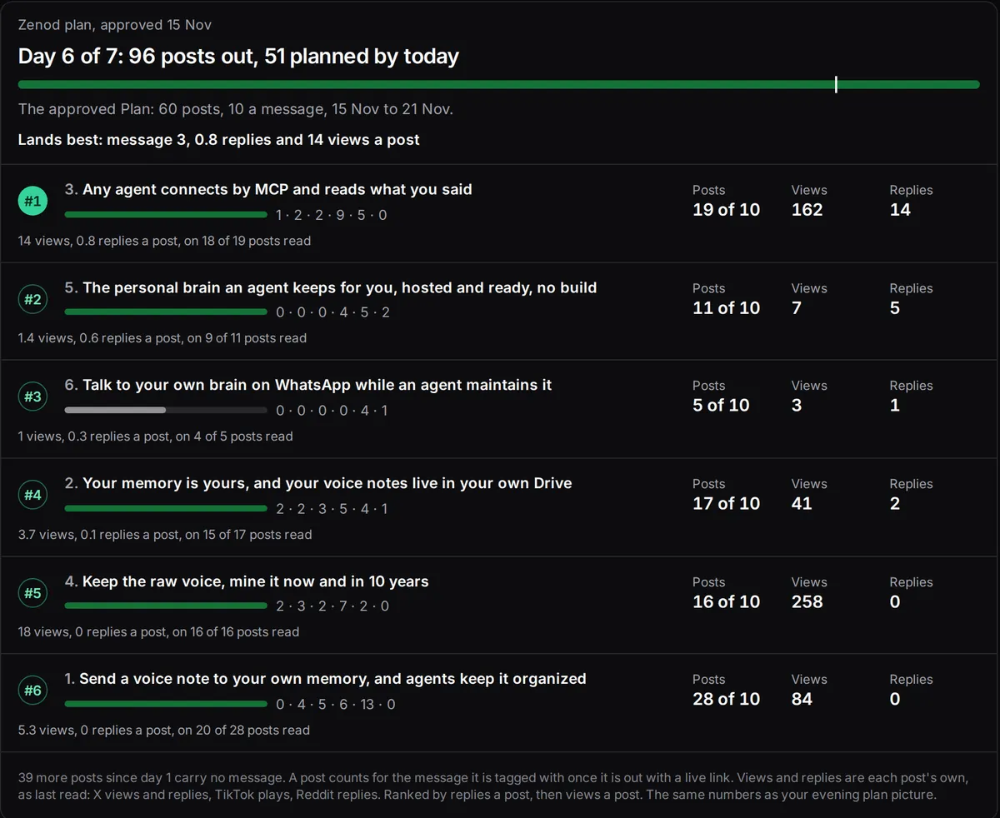
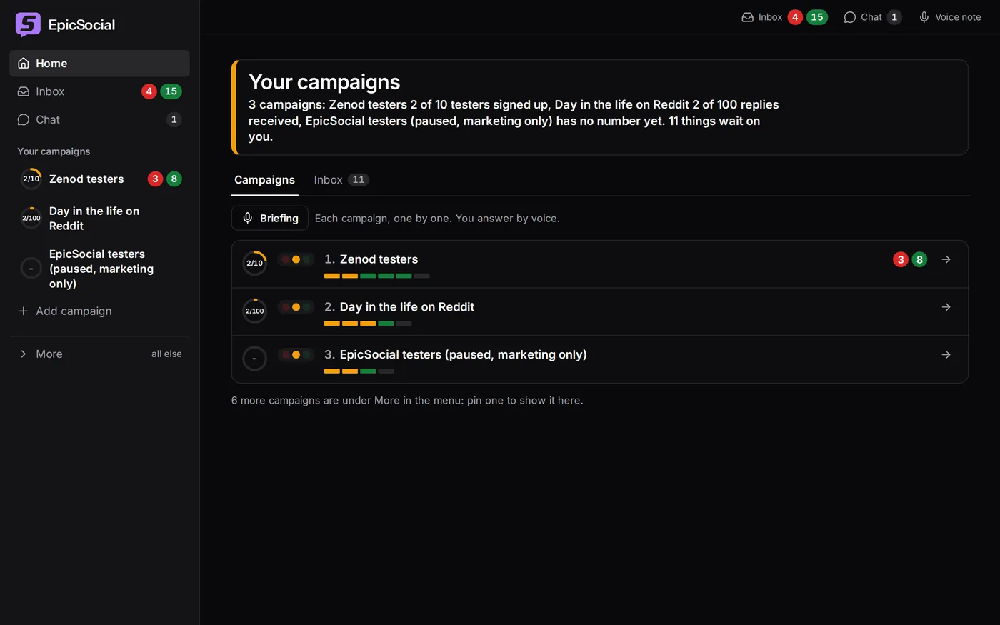
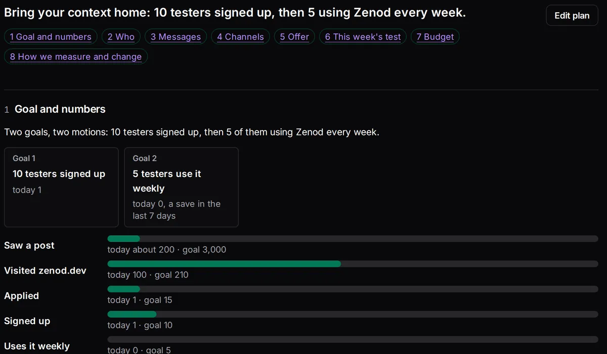
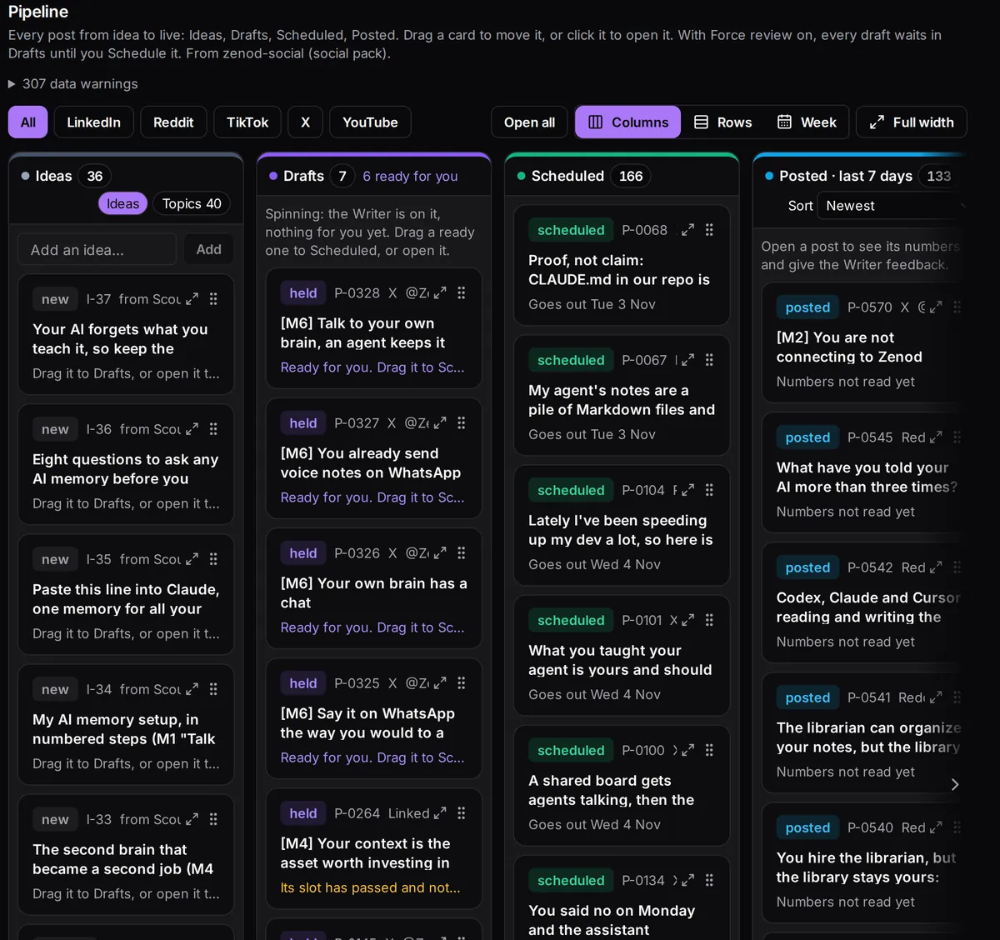
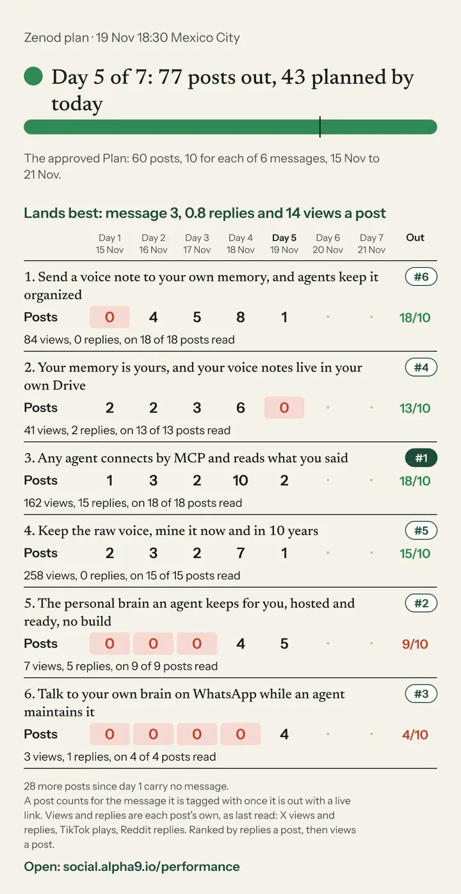
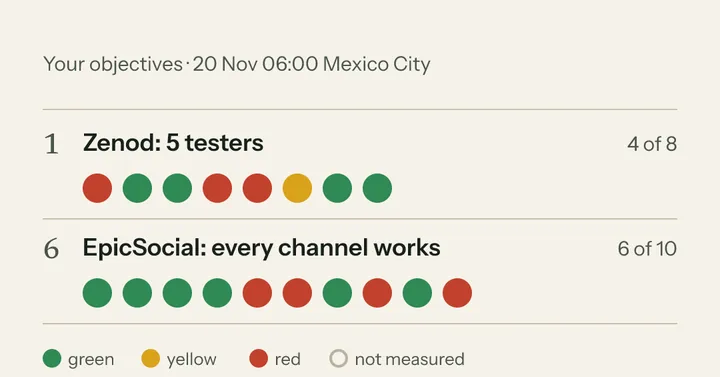

Real screens from our own Zenod campaign
Set one objective. An AI team runs your campaign on every channel.
It writes, posts, measures every post and tells you each evening on WhatsApp where it stands.
- 96posts in 6 days
- 4channels posting
- 2 hbetween check-ins

See it work, in five screens.




A campaign manager turns the wheel.
Every 2 hours it reads the key results first, names what holds one back and fixes it.
It asks you only when a limit you own blocks a key result.
One number drives the posting.
Say how many posts a day per channel. Every part of the engine reads that number.
- Posts a day12 on each channel
- Slotsspread over the day
- Writerfills each open slot
- Publisherposts at its time
- Readermeasures every post daily
- Key resultposts against the target
The gap to the target is the first thing the Writer and Publisher read when they wake.
Real objectives. Lights you can trust.
A key result turns green only when a post went out and was read. Our own two, this morning.

Every evening, the campaign on your WhatsApp.
Two pictures at 18:30: every channel for 7 days, and the plan message by message. Red means nothing went out.

Sent 19 November 18:30 Mexico City. One account name hidden.
Alpha. We are looking for testers.
Our own team runs Zenod on it every day. We set yours up with you, by hand.
X, Reddit, YouTube Shorts and TikTok post today. LinkedIn is next.
Rather wait? Join the waitlist.
Everything it does
Your campaign at a glance.
See every post, every number and why the campaign exists, each in one screen.
Your home opens on your one goal and its key results, each with a traffic light.
The goal on top with its number, then three to five key results on one line each: the number against its target and a green, amber or red light. The rule is written under them, the rest folds away.
One pipeline for every post
Every post sits in a column by its stage, from idea to posted. Drag a card to move it, or open it to read it full screen.
A Performance page
Daily lines of posts, replies, followers, impressions, page views and sign-ups, with the best post on each platform.
What it does for you, in the Brief
The campaign Brief opens with the benefits the product gives, and every idea and post names the one it shows.
Speak your note on any slide
Tap the mic on a campaign slide and say your answer. It lands where the box sends it, like a typed note.
Open EpicSocial at cloud.epicsocial.app
EpicSocial answers on its own address from anywhere, in its own look, and asks for a login before anything else.
Several campaigns, each with a name
Run more than one campaign. Posts, results and history filter by campaign.
The Brief is a deck you can talk to
Comment on any slide of the Brief and that slide is rebuilt, keep it or undo it.
A target for every campaign
Each campaign has a product deck and one number to hit, refreshed every day.
Talk to your social team
One chat for the whole social team with a voice Call, and one chat inside each campaign.
A voice note on every card
Answer any card by voice, the same as in EpicTeam: the same buttons and recorder on every card.
Home first, then your campaigns.
EpicSocial opens on Home, with every project's team and chat one tap away, then your campaigns each in its project, and the widgets after.
Views, likes and replies, counted every day
Each evening's message says, for every live campaign, how many posts went out, and the views, likes, replies and followers they got, read from the real accounts, with the change since yesterday, and the Performance page charts the views, likes and replies day by day.
A daily word on each campaign: greener or redder, and why.
Your home gets one short digest per campaign goal each day, up to three ideas to get there faster, and a question when a goal has no number yet. Answer by voice, text or one tap.
Each campaign card adds up its own numbers.
Per channel the card shows the account, whether its sign-in is green, the posting rhythm, the goal and its measure, and the summed views, replies and impressions of all its posts with the trend.
A short sidebar with only your pinned campaigns.
The sidebar holds Home, Inbox, Chat and the campaigns you pinned, each with its number. Everything else sits under More, and Home opens on your goals and inbox.
A social kit inside each goal
Select a goal and its social kit is one tap away: pictures, banners, bio lines to copy, colours and post templates.
Each product written once, every goal and campaign on it reads it.
A Products page says what each product is: the problem it solves, who it is for, how it works and what it does for you, with its social kit. Every goal and every campaign names its product and shows those same words and that same kit.
Likes and views on X, counted
Your X posts' likes and views are read and counted, so the summary can say what landed.
Sign up with just an email, and reset a forgotten password
Type your email and a password, press the link in the mail and your own world opens. Forgot it? A one-time link sets a new one.
Leads traced to each post
Each campaign shows how many people came to your site from its posts, and who signed up, matched to the post that brought them.
You decide what goes out.
Every post and reply waits for you unless you say otherwise, and each one explains itself.
Approve posts in your inbox
A post waiting for you is a card in the same inbox as everything else, with the same buttons.
One review switch per campaign
Choose per campaign whether posts wait for you or go out on their own. It starts off.
Holding a post never loses its slot
Undo puts a post back exactly where it was, and a held post is scheduled, never sent at once by surprise.
Every post explains itself
Each post opens with what it is, where it goes and why, before the words.
Short, sharp posts
Writers use proper writing skills and keep posts to one or two clear sentences.
Direct messages on their own page
One row per person with their last message and our draft reply, and every reply waits for you.
Replies in your threads, followed up
The team watches threads you post in and drafts replies for you to approve.
Feedback after posting reaches the writer
The last week of posts stays on the board, and a note on one shapes the next drafts.
An insights helper learns what works
It reads how posts did and tells the writers what to do more of.
One desk for all your feedback
Tell your EpicSocial desk what you think of the wider product and it passes your exact words to the team that builds it, then shows you where they went.
Home shows how every goal is doing, with your inbox one tap away.
Home opens on all your goal sets, each row green, amber or red. The Inbox button sits in the top bar beside Chat and the microphone, with its counts, on any screen and on a phone.
A short talk with your campaign each morning, answered by voice.
One card on your inbox: what the campaign did yesterday, who answered, what it got, and one plain question for today where each answer says what happens next. Your spoken answer reaches the strategist and the writers the same day.
Posts go out safely.
The team posts like a careful person would, from a real browser, never in a burst.
Shorts go up on YouTube, marked as AI made
The team uploads each booked Short to your YouTube channel through YouTube's own sign-in, public and with the AI label, then reads back its views and comments.
X posts from a real browser
The team posts on X through its own signed-in browser, the way you would, with no paid API.
Writes wait while your Mac is offline
Replies written while your Mac is off wait in an outbox and go out one at a time when it is back.
Every tester team can post
Each tester team's own agents can post and reply on X from their own browser, kept apart from ours.
Free for testers.
A free tester program with a clear contract
Five teams can use EpicSocial free. One page shows what we give, what you give and four simple rules.
Feedback by voice note
Send each tester or customer a personal link. They talk, we keep only the text, and the team reads it as feedback.
A scorecard of what is left to set up.
Your home shows the first-day steps with a tick on each one that is really done: signed in, accounts connected, a campaign pinned with its cadence, a first post out.